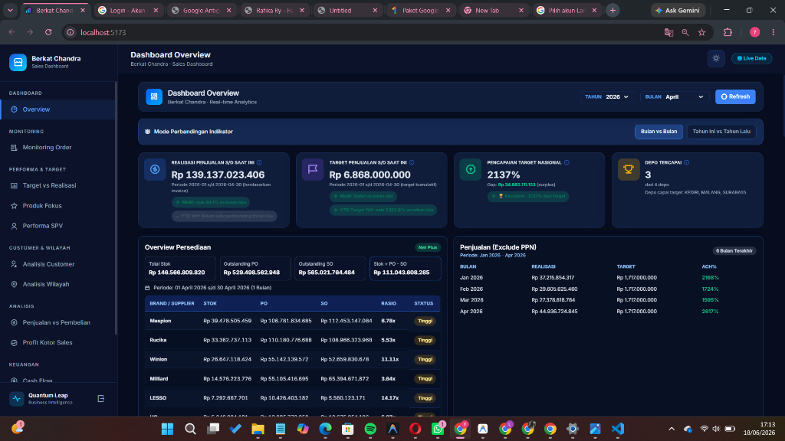

Business Intelligence Developer • AI & Data Developer • 2026
Sales & BI Dashboard
Sistem Monitoring Real-Time PT Berkat Chandra

Deskripsi Proyek
Sales & Business Intelligence Dashboard adalah platform analitik berbasis web yang dikembangkan untuk membantu manajemen memantau performa penjualan, target bisnis, kondisi stok, cashflow, aktivitas sales, serta pencapaian setiap depo secara real-time. Sistem ini mengintegrasikan berbagai sumber data operasional menjadi dashboard yang mudah dipahami sehingga mendukung pengambilan keputusan bisnis yang lebih cepat dan akurat.
Dashboard menyediakan berbagai analisis mulai dari monitoring penjualan, target vs realisasi, performa sales dan SPV, analisis customer, analisis wilayah, monitoring stok, hingga pengelolaan cashflow perusahaan.
Fitur Utama
- Real-Time Sales Monitoring Dashboard: Monitoring performa penjualan harian secara terpusat dan real-time.
- Target vs Realization Tracking: Pelacakan realisasi penjualan terhadap target bulanan dan akumulatif nasional.
- Sales & SPV Performance Analysis: Analisis produktivitas serta pencapaian KPI tiap personel sales dan supervisor.
- Customer Analytics: Pemantauan data transaksi pelanggan lama dan penambahan customer baru.
- Regional Sales & Territory Analysis: Visualisasi performa penjualan berdasarkan wilayah kerja dan depo regional.
- Product Focus & Brand Performance: Analisis fokus penjualan merek dan performa per brand/supplier (stok, PO, SO).
- Inventory & Stock Monitoring: Pemantauan perputaran persediaan, rasio stok, PO vs SO, serta status ketersediaan barang.
- Cashflow & Available Balance: Monitoring saldo harian, arus kas masuk/keluar, dan likuiditas dana operasional.
- KPI Tracking: Dashboard terpadu yang menampilkan key performance indicators bisnis secara instan.
- Automated Data Refresh: Pembaruan data otomatis untuk menjamin akurasi laporan yang disajikan kepada manajemen.
Dampak Proyek
- Monitoring Real-Time: Membantu manajemen memantau performa bisnis secara harian dan real-time.
- Indikator Pencapaian: Menyediakan indikator pencapaian target dan pertumbuhan dibanding periode sebelumnya.
- Kemudahan Analisis: Mempermudah analisis performa sales, depo, produk, dan wilayah penjualan.
- Keputusan Berbasis Data: Mendukung pengambilan keputusan berbasis data melalui visualisasi KPI yang terintegrasi.
Detail Informasi
| Peran | BI & AI Data Developer |
| Klien / Instansi | PT Berkat Chandra |
| Tahun | 2026 |
| Tech Stack |
Python
SQL
Data Analytics
Business Intelligence
Dashboard Dev
Data Visualization
REST API
Real-Time Reporting
|
Keahlian Kunci
Business Intelligence
Data Analytics
Dashboard Development
KPI Monitoring
Sales Analytics
Financial Analytics
Data Visualization
Business Process Analysis
Stakeholder Requirement
Decision Support System
Scan Project